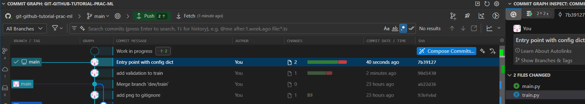
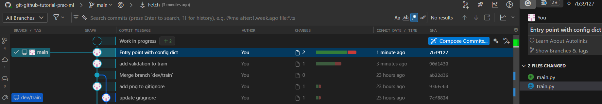
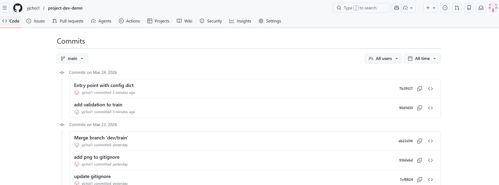
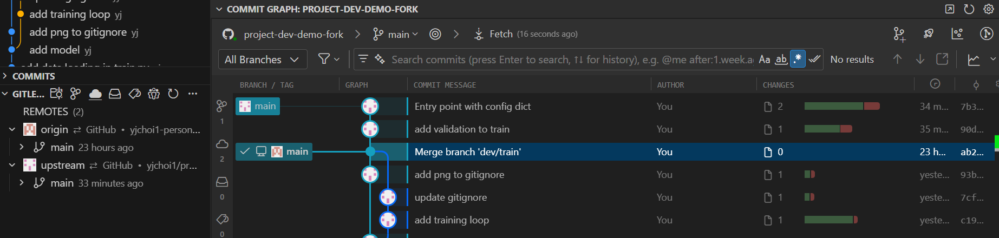
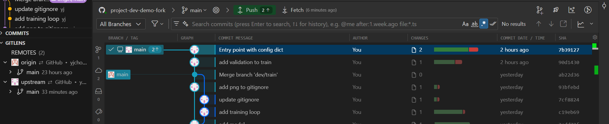

Fetch and pull
Let's say your upstream has made new updates (commits)
Your "boss" made changes in upstream repo
Commit: add validation to train
import torch
from torch import nn
from data_loader import get_dataloaders
from model import MLP
def train(config):
train_loader, val_loader = get_dataloaders(
config["csv_path"],
config["batch_size"],
config["train_fraction"],
config["shuffle_train"],
config["num_workers"],
)
# Get feature dim (e.g. 4) and target dim (e.g. 1) to build the model.
example_features, example_targets = train_loader.dataset[0]
model = MLP(
example_features.shape[0],
example_targets.shape[0],
config["hidden_sizes"],
config["activation"],
)
device = torch.device(config["device"])
model = model.to(device)
loss_fn = nn.MSELoss()
optimizer = torch.optim.Adam(model.parameters(), lr=config["lr"])
# Training loop
for epoch in range(config["epochs"]):
model.train()
train_loss = 0.0
for batch_features, batch_targets in train_loader:
batch_features = batch_features.to(device)
batch_targets = batch_targets.to(device)
predictions = model(batch_features)
loss = loss_fn(predictions, batch_targets)
optimizer.zero_grad()
loss.backward()
optimizer.step()
train_loss += loss.item() * len(batch_features)
train_loss /= len(train_loader.dataset)
model.eval()
val_loss = 0.0
with torch.no_grad():
for batch_features, batch_targets in val_loader:
batch_features = batch_features.to(device)
batch_targets = batch_targets.to(device)
predictions = model(batch_features)
loss = loss_fn(predictions, batch_targets)
val_loss += loss.item() * len(batch_features)
val_loss /= len(val_loader.dataset)
print(f"Epoch {epoch + 1}/{config['epochs']} train_loss={train_loss:.4f} val_loss={val_loss:.4f}")
return model
Commit: Entry point with config dict
import torch
from torch import nn
from data_loader import get_dataloaders
from model import MLP
def train(config):
data_cfg = config["data"]
model_cfg = config["model"]
train_cfg = config["training"]
train_loader, val_loader = get_dataloaders(
data_cfg["csv_path"],
data_cfg["batch_size"],
data_cfg["train_fraction"],
data_cfg["shuffle_train"],
data_cfg["num_workers"],
)
# Get feature dim (e.g. 4) and target dim (e.g. 1) to build the model.
example_features, example_targets = train_loader.dataset[0]
model = MLP(
example_features.shape[0],
example_targets.shape[0],
model_cfg["hidden_sizes"],
model_cfg["activation"],
)
device = torch.device(train_cfg["device"])
model = model.to(device)
loss_fn = nn.MSELoss()
optimizer = torch.optim.Adam(model.parameters(), lr=train_cfg["lr"])
# Training loop
for epoch in range(train_cfg["epochs"]):
model.train()
train_loss = 0.0
for batch_features, batch_targets in train_loader:
batch_features = batch_features.to(device)
batch_targets = batch_targets.to(device)
predictions = model(batch_features)
loss = loss_fn(predictions, batch_targets)
optimizer.zero_grad()
loss.backward()
optimizer.step()
train_loss += loss.item() * len(batch_features)
train_loss /= len(train_loader.dataset)
model.eval()
val_loss = 0.0
with torch.no_grad():
for batch_features, batch_targets in val_loader:
batch_features = batch_features.to(device)
batch_targets = batch_targets.to(device)
predictions = model(batch_features)
loss = loss_fn(predictions, batch_targets)
val_loss += loss.item() * len(batch_features)
val_loss /= len(val_loader.dataset)
print(f"Epoch {epoch + 1}/{train_cfg['epochs']} train_loss={train_loss:.4f} val_loss={val_loss:.4f}")
return model
import torch.nn as nn
from train import train
config = {
"data": {
"csv_path": "data/dataset.csv",
"train_fraction": 0.8,
"batch_size": 32,
"shuffle_train": True,
"num_workers": 0,
},
"model": {
"hidden_sizes": [64, 64],
"activation": nn.ReLU,
},
"training": {
"epochs": 50,
"lr": 1e-3,
"device": "cpu",
},
}
if __name__ == "__main__":
model = train(config)

Push your new local updates to remote

See your remote commit history at github.

Fetch
Now, you want to get updates about what has been changed in the upstream in your local project (linked to your forked remote).
git remote add upstream https://github.com/yjchoi1/project-dev-demo.git # Add upstream to remote
git remote -v
git fetch upstream # Fetch latest changes from upstream

How to pull the fetched upstream changes into your branch
To merge changes from upstream's main branch into your local main:
git checkout main # Switch to your main branch
git fetch upstream # Fetch latest changes from upstream
git merge upstream/main # Merge upstream's main into your local main
Or, combine fetch and merge in a single pull command:

Best practice
Before starting work, always pull remote first to make your local main up-to-date; if someone made update to remote main, your local branch might out-dated. This will cause merge conflict later when you open a PR.
Without pull first: your branch is based on stale main, diverging from what a teammate already pushed:
%%{init: {'theme': 'base', 'themeVariables': {'git0': '#4A90D9', 'git1': '#E07B53', 'gitBranchLabel0': '#ffffff', 'gitBranchLabel1': '#ffffff', 'commitLabelColor': '#333333', 'commitLabelBackground': '#ffffff'}} }%%
gitGraph
commit id: "A"
commit id: "B"
branch dev/my-feature
checkout dev/my-feature
commit id: "my work"
checkout main
commit id: "C (teammate)" type: HIGHLIGHTWith pull first: your branch starts from the latest main, so no unexpected conflicts:
%%{init: {'theme': 'base', 'themeVariables': {'git0': '#4A90D9', 'git1': '#E07B53', 'gitBranchLabel0': '#ffffff', 'gitBranchLabel1': '#ffffff', 'commitLabelColor': '#333333', 'commitLabelBackground': '#ffffff'}} }%%
gitGraph
commit id: "A"
commit id: "B"
commit id: "C (teammate)"
branch dev/my-feature
checkout dev/my-feature
commit id: "my work"If you want to update your remote origin,
git remote -v # check which remotes that you currently have
git push origin main # push your changes to remote
Git pull with rebase
The above example is straight forward. Only "boss" made a change in upstream, so we could just fast-forward merge.
However, when both you and the boss have added commits, a regular git pull creates an extra merge commit, making the history look branchy. --rebase avoids this by replaying your commits on top of the upstream's, keeping history clean and linear.
%%{init: {'theme': 'base', 'themeVariables': {'git0': '#4A90D9', 'git1': '#E07B53', 'gitBranchLabel0': '#ffffff', 'gitBranchLabel1': '#ffffff', 'commitLabelColor': '#333333', 'commitLabelBackground': '#ffffff'}} }%%
gitGraph LR:
commit id: "A (shared)"
branch upstream/main
commit id: "B (boss)"
checkout main
commit id: "C (yours)"
merge upstream/main id: "M (merge commit)" type: HIGHLIGHT%%{init: {'theme': 'base', 'themeVariables': {'git0': '#4A90D9', 'git1': '#E07B53', 'gitBranchLabel0': '#ffffff', 'gitBranchLabel1': '#ffffff', 'commitLabelColor': '#333333', 'commitLabelBackground': '#ffffff'}} }%%
gitGraph LR:
commit id: "A (shared)"
commit id: "B (boss)"
commit id: "C' (yours, replayed)"